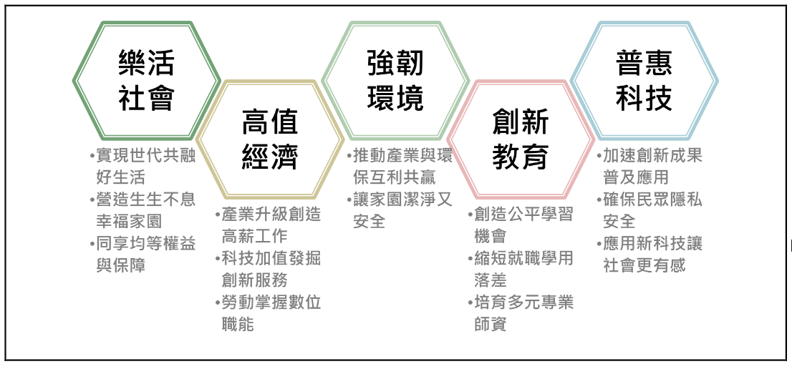

W4 教學 <<
Previous Next >> 創新教育
W5
各分組開始執行 W4-W9 的分組專案 (延續 Topic0 的程式開發), 並從下列台灣未來 10 年科技願景內容中, 確認此舉隸屬未來創新教育體系的一環.
台灣 2030 科技願景:
taiwan_2030_tech_vision.pdf
台灣2030—創新、包容、永續, 實現樂活社會、高值經濟、強韌環境、普惠科技、創新教育等五大目標.
鑒於IoT、AI 與區塊鏈等新科技應用越趨成熟，數位化轉型趨勢已然成形.
- 數位科技驅動的創新社會 - 產業創新, 跨域加乘, 勞動升級.
- 跨文化、族群、世代的多元包容社會 - 長幼安居, 青壯樂業, 族群多元.
- 循環再生、零污染、智慧強韌的永續社會 - 循環生態, 韌性家園.

WCM2021 Programming Project:
目前的 https://github.com/mdecourse/cmsimde 只提供將動態文件 config/content.htm 轉為 content 中各靜態頁面的功能, 為了能夠整理上述 CoppeliaSim 說明文件的轉換, 首先需要建立將 content 中各頁面, 設法集結為 config/content.htm 的功能, 而這項任務將列為 https://mde.tw/wcm2021 課程中的網際內容管理課程專案.
參考資料:
http://mde.tw/cd2021/content/W5.html
https://github.com/mdecourse/copsim/discussions/1
https://github.com/showdownjs/showdown
https://github.com/cyberbotics/webots
https://github.com/CoppeliaRobotics
https://github.com/cyberbotics
https://github.com/bulletphysics/bullet3/tree/master/examples/pybullet
http://a.kmol.info:88/
W4 教學 <<
Previous Next >> 創新教育